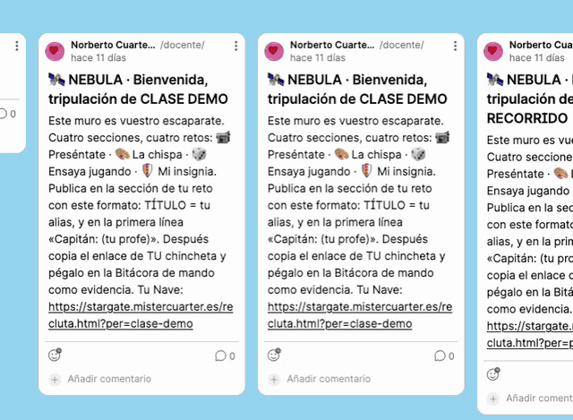
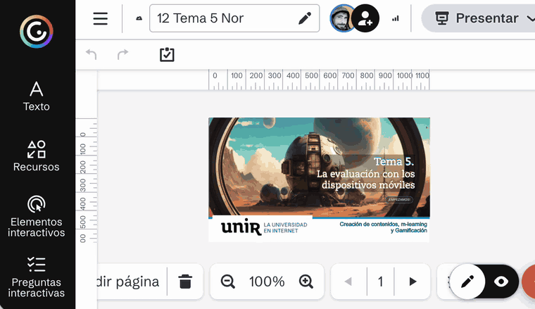

Cuando un reto te pide un enlace, ese enlace tiene que llevar directamente a tu trabajo: no al muro entero, no al genially por la primera página. Si quien lo abre tiene que buscarte, la evidencia no cuenta como evidencia.
2 minutossirve para toda la asignatura
Copiar la dirección del navegador te da el muro entero, con las publicaciones de todo el mundo. Lo que hace falta es el enlace de tu chincheta.
Ojo: «Abrir publicación» solo la abre para ti. El que copia el enlace es el tercero de la lista.

Un genially puede tener veinte páginas. Si mandas el enlace normal, se abre por la primera y hay que buscar la tuya. Se puede mandar abierto por la página exacta, pero solo desde el modo visualización — no desde el editor.
Si el enlace que copias no lleva ese trozo al final, es que la casilla no estaba marcada: se abrirá por la primera página.

Abre tu propio enlace en una ventana de incógnito (o pásaselo a alguien). Si se abre justo donde tiene que abrirse y sin pedir permisos, está bien. Es el minuto mejor invertido de todo el reto.